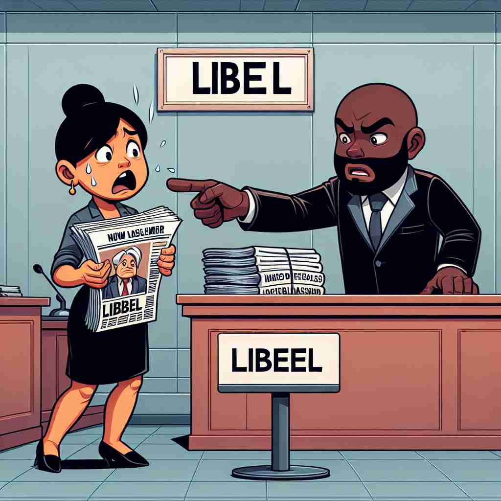
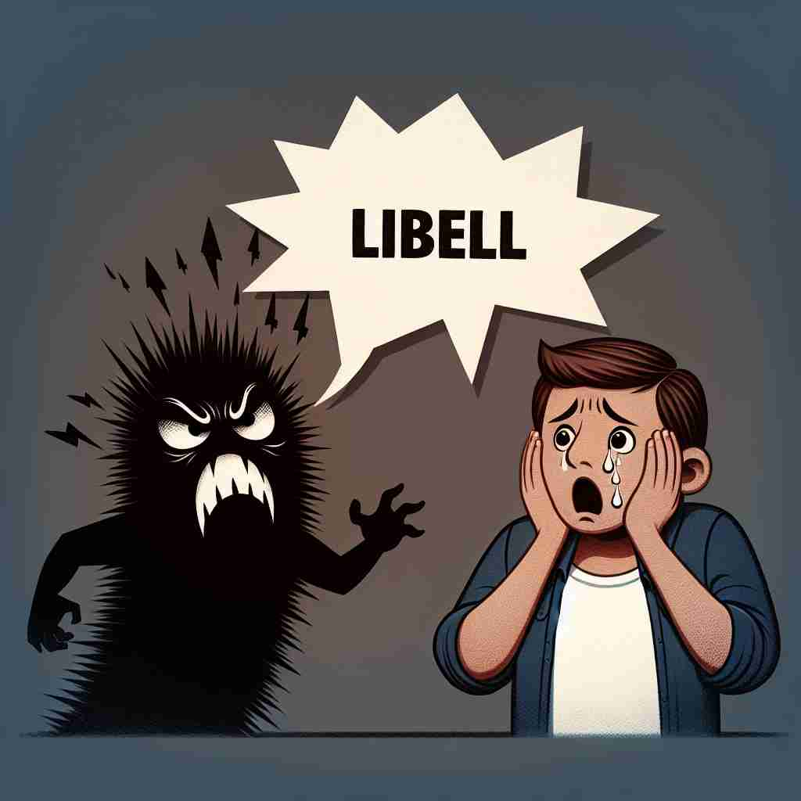

💬 The article about the celebrity contains libel in newspapers.

💬 He had to be careful because he could suffer from libel if someone wrote a false statement about him.

💬 The lawyer will prove that the newspaper chose to publish a libel.
🔈 ['laɪb(ə)l]
🗝️ n. a false statement in written or printed form that damages a person's reputation
🖼️ 在一家繁忙的报社编辑室里，编辑们正在讨论一篇即将刊登的文章。忽然，一位记者兴奋地展示一份文件，声称掌握了重大新闻。然而，资深编辑阅读后严肃地指出：'这篇报道未经证实，会对某人的名誉造成 libel。'
🔍 记住"libel"的核心含义是"书面诽谤"。想象一个人用笔写下有害他人名誉的虚假陈述，这个画面可以帮助你联想"libel"的各种用法。无论是名词还是动词形式，都围绕着"以书面形式损害他人名誉"这一核心概念。法律相关的用法也源于这一基本含义，体现了"libel"在法律领域的重要性。
💬 The article about the celebrity contains libel in newspapers.
💬 He had to be careful because he could suffer from libel if someone wrote a false statement about him.
💬 The lawyer will prove that the newspaper chose to publish a libel.
🌳 词根 "lib" 源自拉丁语 "liber"（书），加上后缀 "-el"，构成名词 "libel"，指书面上的诽谤或中伤言论。
💡 记住 "libel" 可以联想图书馆里的书，比如发表在书面或印刷物上的诽谤性内容，通过将 "书" 和 "诽谤" 的概念联系起来，便于记忆。
🗝️ v. to publish a false statement that damages a person's reputation
🖼️ 在网络世界里，一个博客写手匆忙发布了一篇惊人的文章，以吸引读者点击。没想到，这篇文章错误百出，涉及某位知名人物的不实指控。很快，写手收到了一封警告信，提示其行为构成了 libel。
💬 The magazine was accused of libeling the politician in its latest issue.
❓ 将名词"libel"转化为动词使用
🗝️ n. the act of publishing a false statement that harms someone's reputation
🖼️ 在一次新闻发布会上，一位公关代表严肃对待记者的问题。他强调，公司从未参与任何 libel 活动，并且会采取合法手段保护公司声誉不受不实指控的伤害。
💬 The court found the journalist guilty of libel for his unfounded allegations.
❓ 强调"libel"作为一种行为
🗝️ n. a written statement used to begin a lawsuit in some courts of law
🖼️ 在律师事务所的会议室里，一位律师正在与客户商议如何应对即将到来的诉讼。他向客户解释，这涉及一个 libel，被用作启动法庭诉讼的重要文件。
💬 The lawyer filed a libel with the court, detailing the plaintiff's grievances.
❓ 源于法律术语，指控告文书，与损害名誉相关